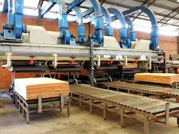
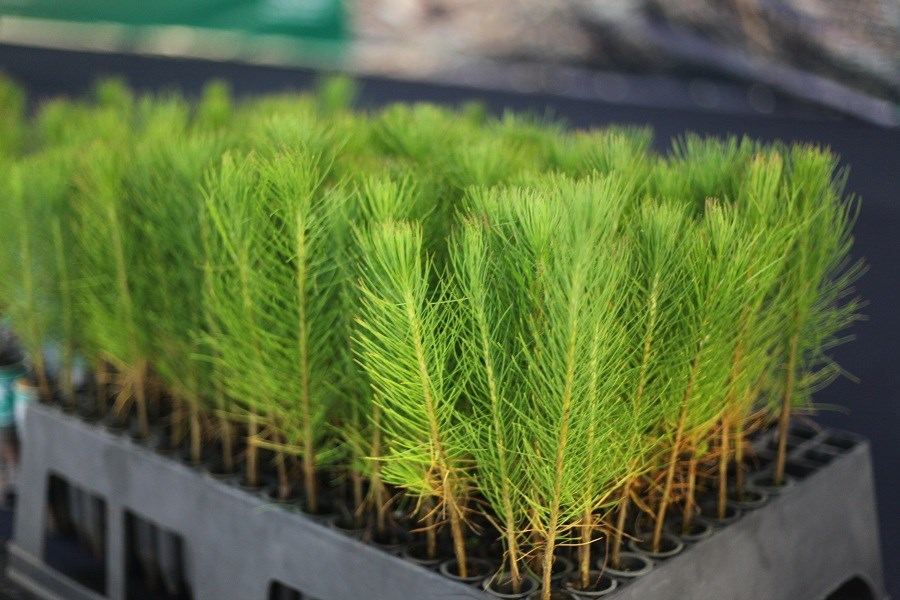
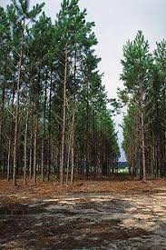
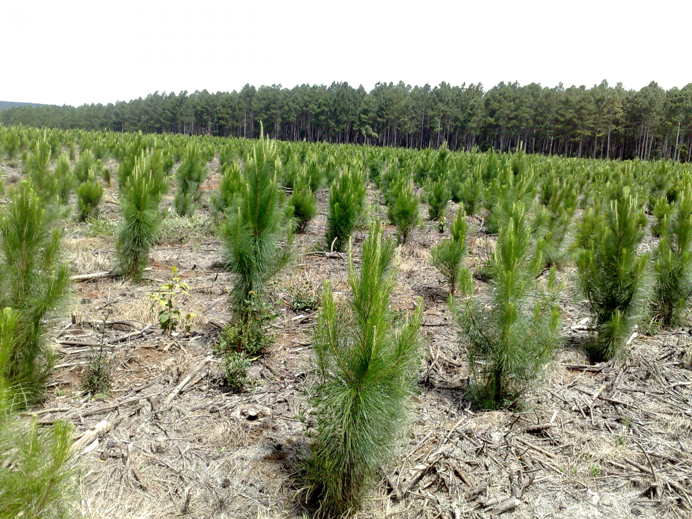
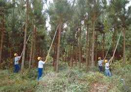
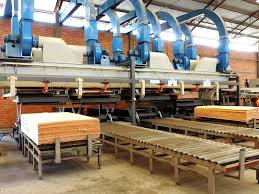
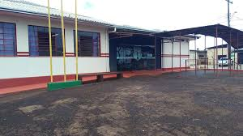

Produção e Exportação de Compensado
A região sudoeste do Paraná é um polo reconhecido mundialmente na produção de compensados, exportando para diversos países...

A silvicultura é o cultivo de Pinus para fins industriais, sendo uma importante atividade econômica da região...
 O cultivo de Pinus na região iniciou-se há décadas devido à demanda por madeira de qualidade...
 A região sudoeste do Paraná é um polo reconhecido mundialmente na produção de compensados, exportando para diversos países...

Este projeto foi desenvolvido por alunos interessados na silvicultura e sua relevância para a economia local...
